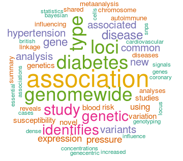

Chris Wallace group: statistics, genomics and autoimmune diseases
Chris Wallace is a Wellcome Trust Research Career Development Fellow, head of the statistics group in the Wellcome Trust/JDRF Diabetes and Inflammation Laboratory at Cambridge, and a visitor at the MRC Biostatistics Unit. My group is currently based in the Cambridge Institute for Medical Research.
Our immune system protects us against infectious disease, but sometimes attacks our own cells, causing autoimmune disease. My group use statistical analysis of genetic and genomic datasets to understand the genes, cells and pathways involved in the aetiology of autoimmune diseases such as type 1 diabetes and the relationships between different autoimmune diseases. Our goal is to further the understanding of these diseases in order to help prevent and treat them.
These pages exist to store information about datasets and code used in papers from our group. The aim is to make this information accessible, which is not always possible in the published papers.
Moving and hiring
In February 2016 I will move to the Department of Medicine as a Wellcome Trust Senior Fellow and take on a more formal visiting position at the MRC Biostatistics Unit as a Visiting Programme Leader. I will be looking for ambitious post doctural statisticians / computational biologists / <insert other quantitative genomics-related analyst> who are motivated to understand the dysregulation of the immune system and its relationship to autoimmune disease. If that's you, get in touch! < cew54 at cam.ac.uk >
